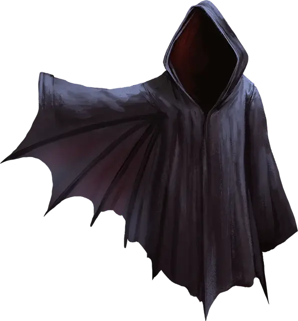

Крылья полёта
Wings of Flying
Чудесный предмет, редкий (требуется настройка)

Рекомендованная стоимость 501-5 000 зм
Пока вы носите этот плащ, вы можете действием произнести командное слово. Это превратит плащ в пару крыльев летучей мыши, или птицы на вашей спине на 1 час или пока вы не повторите командное слово действием. Крылья дают вам скорость полёта 60 футов. Если они исчезают, вы не можете повторно вызвать их 1к12 часов.